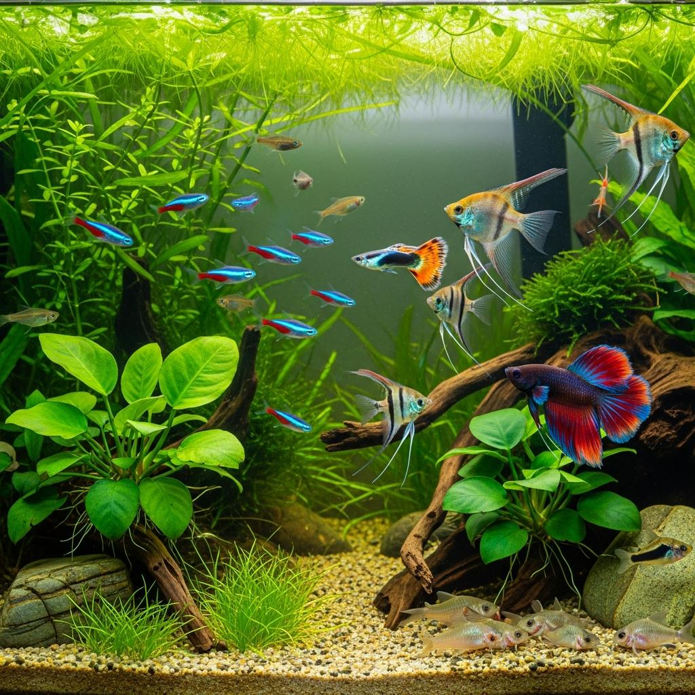
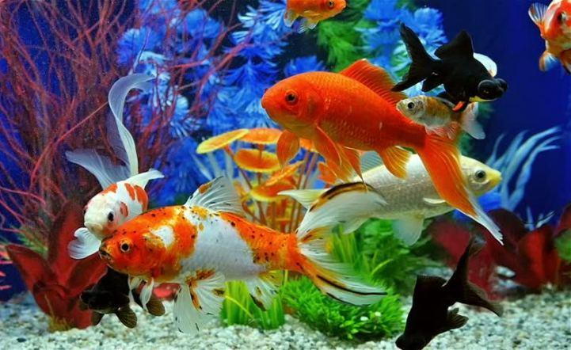
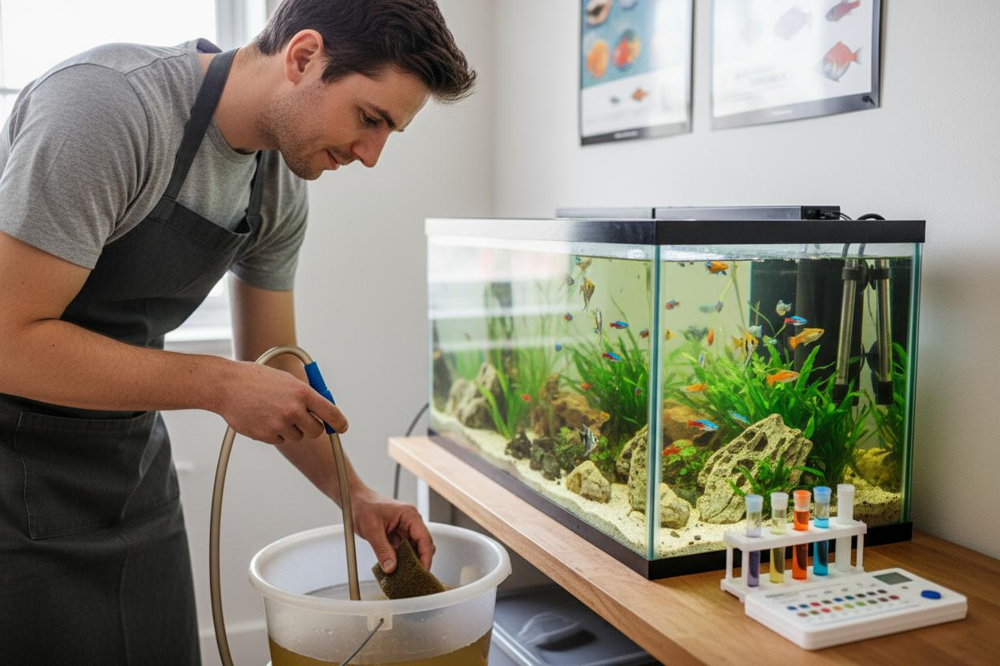
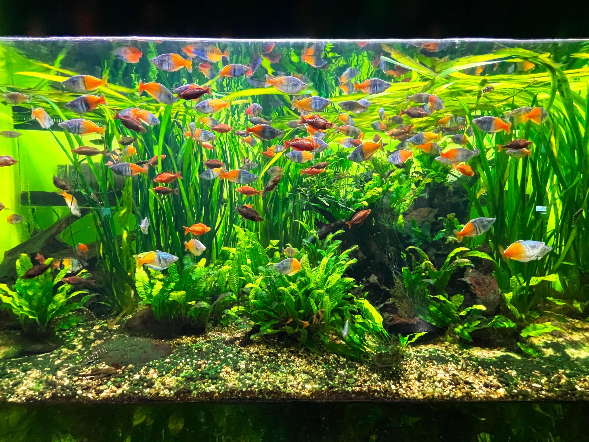
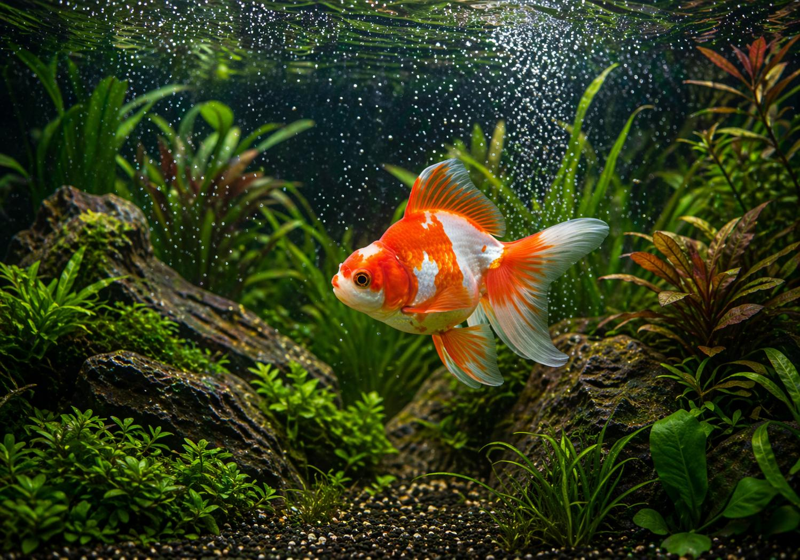
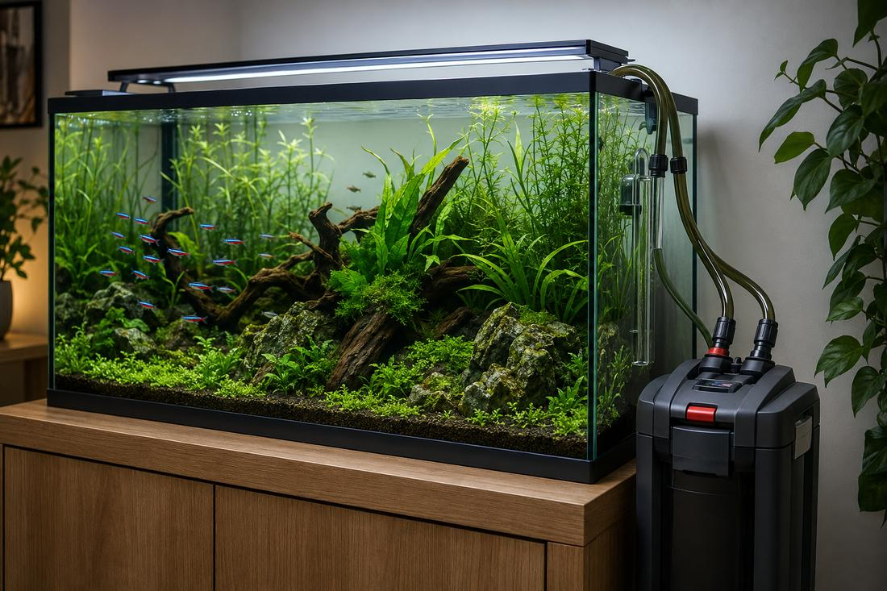

Sobre Nosotros
Mundo de los Peces es un proyecto dedicado a compartir conocimientos sobre los peces ornamentales y el cuidado de los acuarios. Nuestro propósito es ayudar tanto a personas que están comenzando en la acuariofilia como a quienes ya tienen experiencia.

Nuestra historia
Mundo de los Peces nace del interés por conocer las diferentes especies de peces y aprender sobre sus necesidades. Con este espacio buscamos reunir información útil sobre alimentación, mantenimiento de acuarios, filtración y convivencia entre especies.

Nuestra misión
Brindar información clara y accesible sobre el cuidado responsable de los peces, promoviendo buenas prácticas de alimentación, mantenimiento y bienestar de las especies que viven en acuarios.

Nuestra visión
Convertir Mundo de los Peces en un espacio de consulta donde las personas puedan aprender, resolver dudas y mejorar las condiciones de vida de sus peces.

Nuestros valores
- Respeto y bienestar de los animales.
- Responsabilidad en el cuidado de los acuarios.
- Aprendizaje y mejora continua.
- Compromiso con la información confiable.
- Protección de las especies y el medio ambiente.

Nuestro objetivo
Queremos que cada persona comprenda que mantener peces no consiste solamente en alimentarlos. También es importante conocer la calidad del agua, el tamaño adecuado del acuario, los sistemas de filtración y la compatibilidad entre especies.
